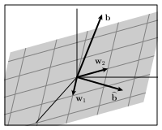

We know that a linear system \(A\xvec=\bvec\) is inconsistent when \(\bvec\) is not in \(\col(A)\text{,}\) the column space of \(A\text{.}\) Later in this chapter, we’ll develop a strategy for dealing with inconsistent systems by finding \(\bhat\text{,}\) the vector in \(\col(A)\) that minimizes the distance to \(\bvec\text{.}\) The equation \(A\xvec=\bhat\) is therefore consistent and its solution set can provide us with useful information about the original system \(A\xvec=\bvec\text{.}\)
In this section and the next, we’ll develop some techniques that enable us to find \(\bhat\text{,}\) the vector in a given subspace \(W\) that is closest to a given vector \(\bvec\text{.}\)
Preview Activity6.3.1.
For this activity, it will be helpful to recall the distributive property of dot products:
Verify that the vectors \(\wvec_1\) and \(\wvec_2\) are orthogonal.
Suppose that \(\bvec =\twovec74\) and find the dot products \(\wvec_1\cdot\bvec\) and \(\wvec_2\cdot\bvec\text{.}\)
We would like to express \(\bvec\) as a linear combination of \(\wvec_1\) and \(\wvec_2\text{,}\) which means that we need to find weights \(c_1\) and \(c_2\) such that
In a similar fashion, find the weight \(c_2\text{.}\)
Verify that \(\bvec = c_1\wvec_1+c_2\wvec_2\) using the weights you have found.
We frequently ask to write a given vector as a linear combination of given basis vectors. In the past, we have done this by solving a linear system. The preview activity illustrates how this task can be simplified when the basis vectors are orthogonal to each other. We’ll explore this and other uses of orthogonal bases in this section.
Subsection6.3.1Orthogonal sets
The preview activity dealt with a basis of \(\real^2\) formed by two orthogonal vectors. More generally, we will consider a set of orthogonal vectors, as described in the next definition.
Definition6.3.1.
By an orthogonal set of vectors, we mean a set of nonzero vectors each of which is orthogonal to the others.
form an orthogonal set of 4-dimensional vectors. Since there are only three vectors, this set does not form a basis for \(\real^4\text{.}\) It does, however, form a basis for a 3-dimensional subspace \(W\) of \(\real^4\text{.}\)
Suppose that a vector \(\bvec\) is a linear combination of an orthogonal set of vectors \(\wvec_1,\wvec_2,\ldots,\wvec_n\text{;}\) that is, suppose that
Just as in the preview activity, we can find the weight \(c_1\) by dotting both sides with \(\wvec_1\) and applying the distributive property of dot products:
Using this proposition, we can see that an orthogonal set of vectors must be linearly independent. Suppose, for instance, that \(\wvec_1,\wvec_2,\ldots,\wvec_n\) is a set of nonzero orthogonal vectors and that one of the vectors is a linear combination of the others, say,
which cannot happen since we know that \(\wvec_3\) is nonzero. This tells us that
Proposition6.3.5.
An orthogonal set of vectors \(\wvec_1,\wvec_2,\ldots,\wvec_n\) is linearly independent.
If the vectors in an orthogonal set have dimension \(m\text{,}\) they form a linearly independent set in \(\real^m\) and are therefore a basis for the subspace \(W=\laspan{\wvec_1,\wvec_2,\ldots,\wvec_n}\text{.}\) If there are \(m\) vectors in the orthogonal set, they form a basis for \(\real^m\text{.}\)
Verify that this set forms an orthogonal set of \(3\)-dimensional vectors.
Explain why we know that this set of vectors forms a basis for \(\real^3\text{.}\)
Suppose that \(\bvec=\threevec24{-4}\text{.}\) Find the weights \(c_1\text{,}\)\(c_2\text{,}\) and \(c_3\) that express \(\bvec\) as a linear combination \(\bvec=c_1\wvec_1 + c_2\wvec_2 + c_3\wvec_3\) using Proposition 6.3.4.
If we multiply a vector \(\vvec\) by a positive scalar \(s\text{,}\) the length of \(\vvec\) is also multiplied by \(s\text{;}\) that is, \(\len{s\vvec} = s\len{\vvec}\text{.}\)
Using this observation, find a vector \(\uvec_1\) that is parallel to \(\wvec_1\) and has length 1. Such vectors are called unit vectors.
Similarly, find a unit vector \(\uvec_2\) that is parallel to \(\wvec_2\) and a unit vector \(\uvec_3\) that is parallel to \(\wvec_3\text{.}\)
Construct the matrix \(Q=\begin{bmatrix}
\uvec_1 \amp \uvec_2 \amp \uvec_3
\end{bmatrix}\) and find the product \(Q^TQ\text{.}\) Use Proposition 6.2.8 to explain your result.
This activity introduces an important way of modifying an orthogonal set so that the vectors in the set have unit length. Recall that we may multiply any nonzero vector \(\wvec\) by a scalar so that the new vector has length 1. For instance, we know that if \(s\) is a positive scalar, then \(\len{s\wvec} = s\len{\wvec}\text{.}\) To obtain a vector \(\uvec\) having unit length, we want
The previous activity and example illustrate the next proposition.
Proposition6.3.8.
If the columns of the \(m\times n\) matrix \(Q\) form an orthonormal set, then \(Q^TQ = I_n\text{,}\) the \(n\times n\) identity matrix.
Subsection6.3.2Orthogonal projections
We now turn to an important problem that will appear in many forms in the rest of our explorations. Suppose, as shown in Figure 6.3.9, that we have a subspace \(W\) of \(\real^m\) and a vector \(\bvec\) that is not in that subspace. We would like to find the vector \(\bhat\) in \(W\) that is closest to \(\bvec\text{,}\) meaning the distance between \(\bhat\) and \(\bvec\) is as small as possible.

Figure6.3.9.Given a plane in \(\real^3\) and a vector \(\bvec\) not in the plane, we wish to find the vector \(\bhat\) in the plane that is closest to \(\bvec\text{.}\)
To get started, let’s consider a simpler problem where we have a line \(L\) in \(\real^2\text{,}\) defined by the vector \(\wvec\text{,}\) and another vector \(\bvec\) that is not on the line, as shown on the left of Figure 6.3.10. We wish to find \(\bhat\text{,}\) the vector on the line that is closest to \(\bvec\text{,}\) as illustrated in the right of Figure 6.3.10.
Figure6.3.10.Given a line \(L\) and a vector \(\bvec\text{,}\) we seek the vector \(\bhat\) on \(L\) that is closest to \(\bvec\text{.}\)
To find \(\bhat\text{,}\) we require that \(\bvec-\bhat\) be orthogonal to \(L\text{.}\) For instance, if \(\yvec\) is another vector on the line, as shown in Figure 6.3.11, then the Pythagorean theorem implies that
which means that \(\len{\bvec-\yvec}\geq|\bvec-\bhat|\text{.}\) Therefore, \(\bhat\) is closer to \(\bvec\) than any other vector on the line \(L\text{.}\)
Figure6.3.11.The vector \(\bhat\) is closer to \(\bvec\) than \(\yvec\) because \(\bvec-\bhat\) is orthogonal to \(L\text{.}\)
Definition6.3.12.
Given a vector \(\bvec\) in \(\real^m\) and a subspace \(W\) of \(\real^m\text{,}\) the orthogonal projection of \(\bvec\) onto \(W\) is the vector \(\bhat\) in \(W\) that is closest to \(\bvec\text{.}\) It is characterized by the property that \(\bvec-\bhat\) is orthogonal to \(W\text{.}\)
Activity6.3.3.
This activity demonstrates how to determine the orthogonal projection of a vector onto a subspace of \(\real^m\text{.}\)
Let’s begin by considering a line \(L\text{,}\) defined by the vector \(\wvec=\twovec21\text{,}\) and a vector \(\bvec=\twovec24\) not on \(L\text{,}\) as illustrated in Figure 6.3.13.
Figure6.3.13.Finding the orthogonal projection of \(\bvec\) onto the line defined by \(\wvec\text{.}\)
To find \(\bhat\text{,}\) first notice that \(\bhat =
s\wvec\) for some scalar \(s\text{.}\) Since \(\bvec-\bhat = \bvec -
s\wvec\) is orthogonal to \(\wvec\text{,}\) what do we know about the dot product
Apply the distributive property of dot products to find the scalar \(s\text{.}\) What is the vector \(\bhat\text{,}\) the orthogonal projection of \(\bvec\) onto \(L\text{?}\)
More generally, explain why the orthogonal projection of \(\bvec\) onto the line defined by \(\wvec\) is
The same ideas apply more generally. Suppose we have an orthogonal set of vectors \(\wvec_1=\threevec22{-1}\) and \(\wvec_2=\threevec102\) that define a plane \(W\) in \(\real^3\text{.}\) If \(\bvec=\threevec396\) another vector in \(\real^3\text{,}\) we seek the vector \(\bhat\) on the plane \(W\) closest to \(\bvec\text{.}\) As before, the vector \(\bvec-\bhat\) will be orthogonal to \(W\text{,}\) as illustrated in Figure 6.3.14.
Figure6.3.14.Given a plane \(W\) defined by the orthogonal vectors \(\wvec_1\) and \(\wvec_2\) and another vector \(\bvec\text{,}\) we seek the vector \(\bhat\) on \(W\) closest to \(\bvec\text{.}\)
The vector \(\bvec-\bhat\) is orthogonal to \(W\text{.}\) What does this say about the dot products: \((\bvec-\bhat)\cdot\wvec_1\) and \((\bvec-\bhat)\cdot\wvec_2\text{?}\)
Since \(\bhat\) is in the plane \(W\text{,}\) we can write it as a linear combination \(\bhat = c_1\wvec_1 + c_2\wvec_2\text{.}\) Then
Find the weight \(c_1\) by dotting \(\bvec-\bhat\) with \(\wvec_1\) and applying the distributive property of dot products. Similarly, find the weight \(c_2\text{.}\)
What is the vector \(\bhat\text{,}\) the orthogonal projection of \(\bvec\) onto the plane \(W\text{?}\)
Suppose that \(W\) is a subspace of \(\real^m\) with orthogonal basis \(\wvec_1,\wvec_2,\ldots,\wvec_n\) and that \(\bvec\) is a vector in \(\real^m\text{.}\) Explain why the orthogonal projection of \(\bvec\) onto \(W\) is the vector
Suppose that \(\uvec_1,\uvec_2,\ldots,\uvec_n\) is an orthonormal basis for \(W\text{;}\) that is, the vectors are orthogonal to one another and have unit length. Explain why the orthogonal projection is
If \(Q=\begin{bmatrix}
\uvec_1 \amp \uvec_2 \amp \ldots \amp \uvec_n
\end{bmatrix}\) is the matrix whose columns are an orthonormal basis of \(W\text{,}\) use Proposition 6.2.8 to explain why \(\bhat = QQ^T\bvec\text{.}\)
In all the cases considered in the activity, we are looking for \(\bhat\text{,}\) the vector in a subspace \(W\) closest to a vector \(\bvec\text{,}\) which is found by requiring that \(\bvec-\bhat\) be orthogonal to \(W\text{.}\) This means that \((\bvec-\bhat)\cdot\wvec = 0\) for any vector \(\wvec\) in \(W\text{.}\)
If we have an orthogonal basis \(\wvec_1,\wvec_2,\ldots,\wvec_n\) for \(W\text{,}\) then \(\bhat = c_1\wvec_1+c_w\wvec_2+\cdots+c_n\wvec_n\text{.}\) Therefore,
If \(W\) is a subspace of \(\real^m\) having an orthogonal basis \(\wvec_1,\wvec_2,\ldots, \wvec_n\) and \(\bvec\) is a vector in \(\real^m\text{,}\) then the orthogonal projection of \(\bvec\) onto \(W\) is
Remember that the projection formula given in Proposition 6.3.15 applies only when the basis \(\wvec_1,\wvec_2,\cdots,\wvec_n\) of \(W\) is orthogonal.
If we have an orthonormal basis \(\uvec_1,\uvec_2,\ldots,\uvec_n\) for \(W\text{,}\) the projection formula simplifies to
If \(\uvec_1,\uvec_2,\ldots,\uvec_n\) is an orthonormal basis for a subspace \(W\) of \(\real^m\text{,}\) then the matrix transformation that projects vectors in \(\real^m\) orthogonally onto \(W\) is represented by the matrix \(QQ^T\) where
Let’s check that this works by considering the vector \(\bvec=\threevec100\) and finding \(\bhat\text{,}\) its orthogonal projection onto the plane \(W\text{.}\) In terms of the original basis \(\wvec_1\) and \(\wvec_2\text{,}\) the projection formula from Proposition 6.3.15 tells us that
Suppose that \(L\) is the line in \(\real^3\) defined by the vector \(\wvec=\threevec{1}{2}{-2}\text{.}\)
Find an orthonormal basis \(\uvec\) for \(L\text{.}\)
Construct the matrix \(Q = \begin{bmatrix}\uvec\end{bmatrix}\) and use it to construct the matrix \(P\) that projects vectors orthogonally onto \(L\text{.}\)
Use your matrix to find \(\bhat\text{,}\) the orthogonal projection of \(\bvec=\threevec111\) onto \(L\text{.}\)
Find \(\rank(P)\) and explain its geometric significance.
form an orthogonal basis of \(W\text{,}\) a two-dimensional subspace of \(\real^4\text{.}\)
Use the projection formula from Proposition 6.3.15 to find \(\bhat\text{,}\) the orthogonal projection of \(\bvec=\fourvec92{-2}3\) onto \(W\text{.}\)
Find an orthonormal basis \(\uvec_1\) and \(\uvec_2\) for \(W\) and use it to construct the matrix \(P\) that projects vectors orthogonally onto \(W\text{.}\) Check that \(P\bvec = \bhat\text{,}\) the orthogonal projection you found in the previous part of this activity.
Find \(\rank(P)\) and explain its geometric significance.
Find a basis for \(W^\perp\text{.}\)
Find a vector \(\bvec^\perp\) in \(W^\perp\) such that
If \(Q\) is the matrix whose columns are \(\uvec_1\) and \(\uvec_2\text{,}\) find the product \(Q^TQ\) and explain your result.
This activity demonstrates one issue of note. We found \(\bhat\text{,}\) the orthogonal projection of \(\bvec\) onto \(W\text{,}\) by requiring that \(\bvec-\bhat\) be orthogonal to \(W\text{.}\) In other words, \(\bvec-\bhat\) is a vector in the orthogonal complement \(W^\perp\text{,}\) which we may denote \(\bvec^\perp\text{.}\) This explains the following proposition, which is illustrated in Figure 6.3.19
Proposition6.3.18.
If \(W\) is a subspace of \(\real^n\) with orthogonal complement \(W^\perp\text{,}\) then any \(n\)-dimensional vector \(\bvec\) can be uniquely written as
where \(\bhat\) is in \(W\) and \(\bvec^\perp\) is in \(W^\perp\text{.}\) The vector \(\bhat\) is the orthogonal projection of \(\bvec\) onto \(W\) and \(\bvec^\perp\) is the orthogonal projection of \(\bvec\) onto \(W^\perp\text{.}\)
Figure6.3.19.A vector \(\bvec\) along with \(\bhat\text{,}\) its orthogonal projection onto the line \(L\text{,}\) and \(\bvec^\perp\text{,}\) its orthogonal projection onto the orthogonal complement \(L^\perp\text{.}\)
Let’s summarize what we’ve found. If \(Q\) is a matrix whose columns \(\uvec_1, \uvec_2,\ldots,\uvec_n\) form an orthonormal set in \(\real^m\text{,}\) then
\(Q^TQ = I_n\text{,}\) the \(n\times n\) identity matrix, because this product computes the dot products between the columns of \(Q\text{.}\)
\(QQ^T\) is the matrix the projects vectors orthogonally onto \(W\text{,}\) the subspace of \(\real^m\) spanned by \(\uvec_1,\ldots,\uvec_n\text{.}\)
As we’ve said before, matrix multiplication depends on the order in which we multiply the matrices, and we see this clearly here.
Because \(Q^TQ=I\text{,}\) there is a temptation to say that \(Q\) is invertible. This is usually not the case, however. Remember that an invertible matrix must be a square matrix, and the matrix \(Q\) will only be square if \(n=m\text{.}\) In this case, there are \(m\) vectors in the orthonormal set so the subspace \(W\) spanned by the vectors \(\uvec_1,\uvec_2,\ldots,\uvec_m\) is \(\real^m\text{.}\) If \(\bvec\) is a vector in \(\real^m\text{,}\) then \(\bhat=QQ^T\bvec\) is the orthogonal projection of \(\bvec\) onto \(\real^m\text{.}\) In other words, \(QQ^T\bvec\) is the closest vector in \(\real^m\) to \(\bvec\text{,}\) and this closest vector must be \(\bvec\) itself. Therefore, \(QQ^T\bvec = \bvec\text{,}\) which means that \(QQ^T=I\text{.}\) In this case, \(Q\) is an invertible matrix.
In this case, \(\uvec_1\) and \(\uvec_2\) span a plane, a 2-dimensional subspace of \(\real^3\text{.}\) We know that \(Q^TQ = I_2\) and \(QQ^T\) projects vectors orthogonally onto the plane. However, \(Q\) is not a square matrix so it cannot be invertible.
Here, \(\uvec_1\text{,}\)\(\uvec_2\text{,}\) and \(\uvec_3\) form a basis for \(\real^3\) so that both \(Q^TQ=I_3\) and \(QQ^T=I_3\text{.}\) Therefore, \(Q\) is a square matrix and is invertible.
Moreover, since \(Q^TQ = I\text{,}\) we see that \(Q^{-1} =
Q^T\) so finding the inverse of \(Q\) is as simple as writing its transpose. Matrices with this property are very special and will play an important role in our upcoming work. We will therefore give them a special name.
Definition6.3.22.
A square \(m\times m\) matrix \(Q\) whose columns form an orthonormal basis for \(\real^m\) is called orthogonal.
This terminology can be a little confusing. We call a basis orthogonal if the basis vectors are orthogonal to one another. However, a matrix is orthogonal if the columns are orthogonal to one another and have unit length. It pays to keep this in mind when reading statements about orthogonal bases and orthogonal matrices. In the meantime, we record the following proposition.
Proposition6.3.23.
An orthogonal matrix \(Q\) is invertible and its inverse \(Q^{-1} = Q^T\text{.}\)
Subsection6.3.3Summary
This section introduced orthogonal sets and the projection formula that allows us to project vectors orthogonally onto a subspace.
Given an orthogonal set \(\wvec_1,\wvec_2,\ldots,\wvec_n\) that spans an \(n\)-dimensional subspace \(W\) of \(\real^m\text{,}\) the orthogonal projection of \(\bvec\) onto \(W\) is the vector in \(W\) closest to \(\bvec\) and may be written as
If \(\uvec_1,\uvec_2,\ldots,\uvec_n\) is an orthonormal basis of \(W\) and \(Q\) is the matrix whose columns are \(\uvec_i\text{,}\) then the matrix \(P=QQ^T\) projects vectors orthogonally onto \(W\text{.}\)
If the columns of \(Q\) form an orthonormal basis for an \(n\)-dimensional subspace of \(\real^m\text{,}\) then \(Q^TQ=I_n\text{.}\)
An orthogonal matrix \(Q\) is a square matrix whose columns form an orthonormal basis. In this case, \(QQ^T=Q^TQ = I\) so that \(Q^{-1} = Q^T\text{.}\)
Verify that \(\wvec_1\) and \(\wvec_2\) form an orthogonal basis for a plane \(W\) in \(\real^3\text{.}\)
Use Proposition 6.3.15 to find \(\bhat\text{,}\) the orthogonal projection of \(\bvec=\threevec21{-1}\) onto \(W\text{.}\)
Find an orthonormal basis \(\uvec_1\text{,}\)\(\uvec_2\) for \(W\text{.}\)
Find the matrix \(P\) representing the matrix transformation that projects vectors in \(\real^3\) orthogonally onto \(W\text{.}\) Verify that \(\bhat =
P\bvec\text{.}\)
Determine \(\rank(P)\) and explain its geometric significance.
Explain why these vectors form an orthogonal basis for \(\real^3\text{.}\)
Suppose that \(A=\begin{bmatrix} \wvec_1 \amp \wvec_2 \amp \wvec_3
\end{bmatrix}\) and evaluate the product \(A^TA\text{.}\) Why is this product a diagonal matrix and what is the significance of the diagonal entries?
Express the vector \(\bvec=\threevec{-3}{-6}3\) as a linear combination of \(\wvec_1\text{,}\)\(\wvec_2\text{,}\) and \(\wvec_3\text{.}\)
Multiply the vectors \(\wvec_1\text{,}\)\(\wvec_2\text{,}\)\(\wvec_3\) by appropriate scalars to find an orthonormal basis \(\uvec_1\text{,}\)\(\uvec_2\text{,}\)\(\uvec_3\) of \(\real^3\text{.}\)
If \(Q=\begin{bmatrix} \uvec_1 \amp \uvec_2 \amp
\uvec_3
\end{bmatrix}\text{,}\) find the matrix product \(QQ^T\) and explain the result.
If \(L\) is the line defined by the vector \(\wvec_1\text{,}\) find the vector in \(L\) closest to \(\bvec\text{.}\) Call this vector \(\bhat_1\text{.}\)
If \(W\) is the subspace spanned by \(\wvec_1\) and \(\wvec_2\text{,}\) find the vector in \(W\) closest to \(\bvec\text{.}\) Call this vector \(\bhat_2\text{.}\)
Determine whether \(\bhat_1\) or \(\bhat_2\) is closer to \(\bvec\) and explain why.
5.
Suppose that \(\wvec=\threevec2{-1}2\) defines a line \(L\) in \(\real^3\text{.}\)
Find the orthogonal projections of the vectors \(\threevec100\text{,}\)\(\threevec010\text{,}\)\(\threevec001\) onto \(L\text{.}\)
Find the matrix \(P = \frac{1}{\len{\wvec}^2} \wvec
\wvec^T\text{.}\)
Use Proposition 2.5.6 to explain why the columns of \(P\) are related to the orthogonal projections you found in the first part of this exericse.
This means that the length of a vector is unchanged after multiplying by an orthogonal matrix.
If \(\lambda\) is a real eigenvalue of \(Q\text{,}\) explain why \(\lambda=\pm1\text{.}\)
9.
Explain why the following statements are true.
If \(Q\) is an orthogonal matrix, then \(\det Q =
\pm 1\text{.}\)
If \(Q\) is a \(8\times 4\) matrix whose columns are orthonormal, then \(QQ^T\) is an \(8\times8\) matrix whose rank is 4.
If \(\bhat\) is the orthogonal projection of \(\bvec\) onto a subspace \(W\text{,}\) then \(\bvec-\bhat\) is the orthogonal projection of \(\bvec\) onto \(W^\perp\text{.}\)
10.
This exercise is about \(2\times2\) orthogonal matrices.
In Section 2.6, we saw that the matrix \(\begin{bmatrix}
\cos\theta \amp -\sin\theta \\
\sin\theta \amp \cos\theta
\end{bmatrix}\) represents a rotation by an angle \(\theta\text{.}\) Explain why this matrix is an orthogonal matrix.
We also saw that the matrix \(\begin{bmatrix}
\cos\theta \amp \sin\theta \\
\sin\theta \amp -\cos\theta
\end{bmatrix}\) represents a reflection in a line. Explain why this matrix is an orthogonal matrix.
Suppose that \(\uvec_1=\twovec{\cos\theta}{\sin\theta}\) is a 2-dimensional unit vector. Use a sketch to indicate all the possible vectors \(\uvec_2\) such that \(\uvec_1\) and \(\uvec_2\) form an orthonormal basis of \(\real^2\text{.}\)
Explain why every \(2\times2\) orthogonal matrix is either a rotation or a reflection.